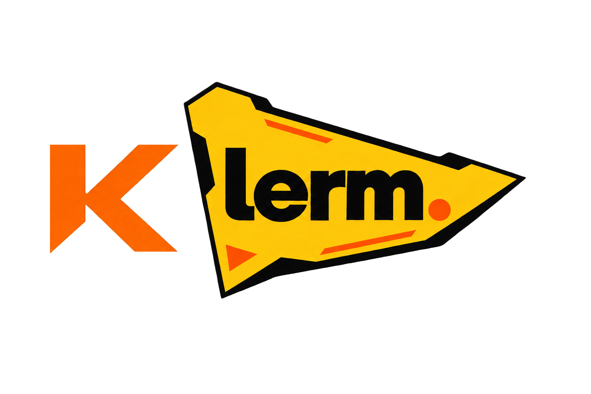

A project dossier, recruitment brief, pre-incorporation contributor memorandum, and proposed community-source licensing framework.
This dossier records the Klerm product vision, identifies the founder's role and the project's legal boundaries, explains the proposed licensing model, and provides a structured basis for recruiting selected part-time contributors who may become eligible for future equity.
It is designed to be shared with serious candidates while avoiding three common mistakes: claiming ownership of third-party open-source code, promising equity that does not yet legally exist, and rewarding raw code volume without acceptance, quality, provenance, and launch requirements.
| 1. | Founder and project record |
| 2. | Expanded product vision |
| 3. | Product architecture and staged roadmap |
| 4. | Contributor opportunity |
| 5. | Conditional future-equity framework |
| 6. | PR and accepted-line qualification rules |
| 7. | Launch and post-launch service conditions |
| 8. | Intellectual property, confidentiality, and attribution |
| 9. | Community-source licensing framework |
| 10. | Signature and candidate schedule |
Klerm was conceived, initiated, named, directed, and developed as a distinct product project by the person identified as the Founder in this document. The earliest repository record reviewed for this dossier is dated August 15, 2026. The repository history documents continued Klerm-specific planning and implementation after that date.
The Founder claims authorship and ownership only to the extent legally supportable: the Klerm name and brand assets owned by the Founder; original Klerm-specific documentation, design, code, orchestration logic, and modifications authored by or validly assigned to the Founder; and contractual rights later assigned to a company designated to own and operate Klerm.
KLERM is presently a pre-incorporation project, not a separate legal person. Until a company is formed, contracts must be signed by identified natural persons. A future Romanian or foreign entity may be formed or designated by the Founder to own, develop, license, commercialize, or operate Klerm (the Future Company).
The Future Company should receive written assignments of the Founder-owned Klerm intellectual property and any contributor intellectual property intended to become company property. The Future Company must separately approve and document all equity grants.
Klerm is derived in part from the Pi agent harness. Pi-derived and historically MIT-licensed materials retain their MIT rights and notices. The Klerm Community Source License described later is prospective and applies only to material expressly placed under it. It cannot revoke rights already granted under MIT.
Klerm is intended to become a neutral orchestration layer for independent AI coding agents. It is not merely another chat interface and is not intended to replace the native strengths of Codex, Claude Code, OpenCode, Pi/Klerm, Cline, local-model harnesses, or later adapters. Instead, Klerm coordinates them through a typed bridge while each agent keeps its own authentication, tools, memory, context policy, model selection, and native session.
The central product thesis is that coding agents become substantially more useful when they can address one another, review one another's work, request clarification, exchange artifacts, test proposed changes, identify mistakes, and return corrections through an auditable orchestration layer.
A Klerm collaboration may begin with one coordinator and one specialist. For example, a Claude Code session can request an independent Codex review through the Klerm bridge. The reply returns to the original native session with sender, recipient, sequence, reason, correlation identifier, and artifact references. The conversation is visible to the user and recorded deterministically.
After a reliable two-agent flow, Klerm can coordinate a small team of three or four agents with explicit roles such as planner, builder, reviewer, and tester. Independent work can be split across isolated Git worktrees. Parallel writers must not edit the same working tree by default.
Klerm should communicate with external coding harnesses through structured interfaces such as the Agent Client Protocol (ACP) where available, and through narrow typed adapters where ACP support is incomplete. The bridge should not depend on scraping human-formatted terminal output. Credentials and native authentication remain behind each adapter.
Each connected agent may have configurable Klerm-visible memory, role, personality, behavioral instructions, work plan, and plan/build policy. These settings supplement rather than overwrite memory owned by the native harness. Shared task memory can be injected into all participating agents from a deterministic snapshot taken at task start.
A user must be able to intervene without terminating the whole collaboration. The default intervention window may remain open for one minute. The user can target one agent or all active agents. If an agent is performing an unsafe-to-interrupt operation, Klerm queues the intervention at the next safe boundary, records delivery, and resumes the existing sessions rather than restarting the task.
Long-running and cloud-hosted operation is a later product direction, not the first technical milestone. Before 24/7 operation, Klerm must prove stop controls, budgets, restart-safe native sessions, deterministic replay, security boundaries, workspace isolation, and intervention behavior locally. Local models remain supported workers but are not required to be the router.
The intended product combines several related workflows in one native application:
| Stage | Outcome | Control requirement |
|---|---|---|
| Bridge contract | Typed discovery, session, prompt, reply, event, artifact, interrupt, stop, and disposal operations. | Credential isolation and deterministic identifiers. |
| Two-agent proof | Two independent harness sessions prompt and reply to each other through Klerm. | One writer, bounded turns, ordered event log, restart-safe replay. |
| User intervention | A user inserts a prompt into a live task without destroying native sessions. | Safe-boundary queuing, target selection, acknowledgement, and timeout. |
| Small team | Three or four agents plan, build, review, and test. | Isolated worktrees, conflict detection, budgets, and controlled integration. |
| Desktop workspace | The Tauri application visualizes and controls the proven backend bridge. | No second frontend orchestrator; typed backend events remain authoritative. |
| Long-running/cloud | Optional remotely hosted, persistent collaboration. | Security, billing, recovery, secrets, audit, tenancy, and emergency stop. |
Every bridge message and orchestration decision should record at least task identifier, correlation identifier, sender, recipient, ordering, timestamp, reason, status, native session reference, agent/harness identity, model attribution when available, and privacy-safe artifact references. Append-only JSONL logs provide a testable source of truth.
Klerm seeks contributors who can improve implementation quality, tests, adapter reliability, user experience, documentation, packaging, security, and product clarity. The immediate need is practical engineering help: reviewing the current code, delivering scoped pull requests, testing real harness combinations, fixing failures, and turning the existing foundation into a reliable product.
Candidates should work transparently through issues and pull requests, disclose material use of AI-generated code, preserve third-party licenses, respond to review, write or update tests, avoid secrets, and accept that contributions can be rejected for architecture, quality, security, duplication, or roadmap reasons.
Because no company currently exists, all percentages in this document describe a proposed conditional right to receive equity in the Future Company. They are not present shares, membership interests, options, voting rights, dividends, wages, or securities issued by KLERM.
One award is reserved for the first Eligible Candidate who completes all Qualification Milestone conditions. The winner is determined by the earliest timestamp at which the candidate's final qualifying pull request is merged into the designated canonical branch after all other conditions are satisfied. If launch is the final outstanding common condition, priority is determined by the earlier timestamp of the final PR that completed the candidate's PR and line requirements.
| Tranche | Proposed award | Condition |
|---|---|---|
| Qualification tranche | 5% of the Future Company on a fully diluted basis immediately after grant | First Eligible Candidate to complete at least 20 accepted PRs, at least 55,000 Accepted Contribution Lines, and the Launch Milestone. |
| Continuation tranche | Additional 5% | Vests in 12 equal monthly installments during one year of continuous active service after launch. |
| Maximum | 10% total | No additional equity without a new written agreement and formal company approval. |
The vesting commencement date used in the formal grant should be credited back to the date of the candidate's first accepted PR, to the extent lawful and approved in the Future Company's definitive documents. The 5% qualification tranche remains a milestone cliff: starting work does not progressively vest that tranche before all milestone conditions are met.
After the First Qualifying Contributor Award is reserved, the Founder may create later award slots. No later slot exists unless the Founder signs a separate Candidate Schedule identifying the person and the available award before the relevant work is counted.
| Later award | Default proposed amount | Condition |
|---|---|---|
| Qualification tranche | 4% | Completion of the applicable written milestone, defaulting to the same PR and Accepted Contribution Line threshold unless the schedule states another substantial milestone. |
| Continuation tranche | Additional 4% | 12 equal monthly installments during one year of continuous active service. |
| Maximum | 8% total per expressly approved later slot | Subject to available equity, dilution analysis, and definitive company approval. |
The Founder may allow unlimited non-equity community participation while limiting the number of equity slots. Work completed without a signed Candidate Schedule does not become equity-eligible retroactively unless the Founder expressly agrees in writing.
All stated percentages are intended to be calculated on a fully diluted basis immediately after the applicable grant and before later financing, option-pool increases, or additional issuances. Every holder is expected to be diluted proportionally by later issuances unless definitive documents state otherwise.
Revenue does not itself dilute ownership. Issuing equity does. One 10% award leaves the Founder with 90% before other grants or financing. Adding one 8% award on the same initial basis can reduce the Founder's economic percentage to approximately 82% before financing. Additional awards or investment can reduce it below 80%. The Founder must approve the aggregate pool and cap table before any later slot is offered.
Calling a relationship a collaboration or equity arrangement does not override mandatory Romanian employment, minimum-compensation, social-contribution, or tax law. If the actual relationship resembles employment, the parties must obtain advice and use compliant employment or contractor documentation. Equity can be taxable on grant, vesting, exercise, transfer, or sale depending on its final legal form.
The First Qualifying Contributor's 5% tranche requires all of the following:
An Accepted Pull Request is a PR that:
Accepted Contribution Lines are qualifying source-code additions shown by the canonical Git history for Accepted Pull Requests. They are measured from repository diff statistics and then adjusted by the exclusions below. Deletions do not increase the count, although valuable deletions may support qualitative acceptance of a PR.
Qualifying source may include manually reviewed TypeScript, JavaScript, Svelte, Rust, shell, HTML, CSS, and other executable project source approved in writing. Test source may count for no more than 25% of the 55,000-line threshold.
The following do not count:
AI assistance is allowed because Klerm is an agentic software project, but volume generated by an AI tool is not automatically accepted work. The candidate must:
The Founder should maintain a shared qualification ledger containing candidate name, Candidate Schedule date, first accepted PR date, PR URL or identifier, merge commit, accepted raw additions, excluded additions, accepted line total, review status, verification status, and cumulative total. The candidate may challenge an entry within fourteen days. Corrections must be recorded rather than silently rewriting history.
For this framework, Launch means a publicly obtainable Klerm beta or stable release satisfying a written release checklist that includes:
The continuation tranche vests monthly over the twelve months after Launch. Active service requires at least one accepted PR per month or another pre-approved, documented contribution of comparable value, such as release support, incident response, architecture review, testing, adapter maintenance, or security remediation.
An approved temporary absence does not automatically end participation, but unapproved cessation of service stops future vesting. Missed requirements, cure periods, termination, and the treatment of partially completed months must be defined in the definitive agreement.
Each party must list code, tools, documentation, inventions, and other materials created before the collaboration or outside its scope. Background IP remains with its owner unless separately assigned. Incorporating background IP into Klerm requires a written license broad enough for Klerm's intended distribution and commercialization.
Before equity-eligible work is accepted, the definitive contributor agreement should either assign the relevant economic copyright and other transferable rights to the Founder/Future Company or grant an irrevocable, worldwide, transferable, sublicensable license sufficient to develop, modify, distribute, host, and commercialize Klerm. Mandatory moral rights and employee-invention rules require Romanian legal review.
Contributors must identify third-party code and comply with its license. Pi MIT notices must remain. No contributor may remove attribution, introduce incompatible code, or claim ownership of a third party's work.
Private source code, credentials, unreleased roadmaps, security findings, financial plans, candidate data, customer information, and non-public technical material should be used only for Klerm work and disclosed only to authorized persons. Public repository content and independently developed information are not confidential merely because they relate to Klerm.
The Klerm name, logos, and visual identity are not licensed for competing products merely because source-code rights are granted. Trademark clearance and registration should be considered before commercial launch.
New, expressly marked Klerm-specific material may be released under the Klerm Community Source License 1.0. The license allows source inspection, modification, redistribution under the same terms, and production use below the user limit. It does not automatically convert to MIT or another open-source license.
Production use is permitted only while the aggregate number of unique Annual Active Users across a licensee and its affiliates does not exceed 100,000 during any rolling twelve-month period. Above that threshold, a separate written commercial license is required.
The count applies to people directly using Klerm or a service materially powered by Klerm. It does not apply to end users of independent applications created with Klerm when those users do not access Klerm itself. This distinction is essential: developers must remain free to build successful products with Klerm.
The restriction is prospective. Pi-derived code and public Klerm copies already distributed under MIT remain usable under MIT, including for commercial use. A new license cannot revoke those grants. The commercial advantage must therefore come from future Klerm-specific development, brand, hosted services, support, integrations, security, and continued releases.
A field-of-use or scale restriction fails the Open Source Definition's free-use requirements. Klerm should describe this model as source-available or community source, not OSI-approved open source.
Before accepting outside contributions into community-source components, Klerm needs a contributor agreement that permits the intended license and future commercial licensing. GitHub participation alone should not be treated as an assignment of copyright.
| Founder legal name | |
| Candidate legal name | |
| Candidate GitHub identity | |
| Award category | First Qualifying Contributor / Later Contributor |
| Maximum proposed equity | 10% / 8% / other: ______ |
| Canonical branch | |
| First accepted PR | |
| Additional written milestone | |
| Schedule effective date |
| Founder | Candidate |
|---|---|
| Signature: | Signature: |
| Printed name: | Printed name: |
| Date: | Date: |
These signatures acknowledge receipt and the parties' present negotiation framework. They do not replace the definitive IP, services, company, shareholder, option, or equity documents required to create enforceable ownership rights.
Klerm repository records. PLAN.md, APP_PLAN.md, README.md, repository license files, and Git history reviewed September 16, 2026.
Y Combinator. Michael Seibel, "How to Split Equity Among Co-Founders." Equal or near-equal treatment for genuine co-founders and the common four-year/one-year-cliff structure. https://www.ycombinator.com/blog/splitting-equity-among-founders
Carta. "How much equity should I give early employees?" Equity should be assessed together with salary, role, stage, and vesting; early employee pools commonly represent a material portion of fully diluted equity. https://carta.com/learn/startups/compensation/employee-equity/
Carta. "Vesting: A guide to schedules, cliffs, and acceleration." Time-based, milestone-based, and hybrid vesting; four years with a one-year cliff is common for founders and early employees. https://carta.com/learn/equity/stock-options/vesting/
Founder Institute. FAST advisor framework. Pre-seed advisor reference points and shorter advisor vesting; expressly not intended for traditional project consulting. https://fi.co/fast
MariaDB. Business Source License 1.1 and adoption FAQ. BSL permits an additional production-use grant but automatically converts each version to an open-source change license no later than four years after first public distribution. https://mariadb.com/bsl11/ and https://mariadb.com/bsl-faq-adopting/
Open Source Initiative. Open Source Definition, including no discrimination against fields of endeavor. A 100,000-user restriction is therefore not an OSI open-source term. https://opensource.org/osd
Choose a License. MIT permits commercial use, distribution, modification, and private use while requiring preservation of the copyright and license notice. https://choosealicense.com/licenses/mit/
GitHub Terms of Service. Contributions under a repository license are normally licensed under the same terms unless a separate agreement controls. https://docs.github.com/en/site-policy/github-terms/github-terms-of-service#6-contributions-under-repository-license
PwC Worldwide Tax Summaries, Romania. General Romanian treatment of employment, independent activity, intellectual-property income, capital gains, and dividends. https://taxsummaries.pwc.com/romania/individual/income-determination